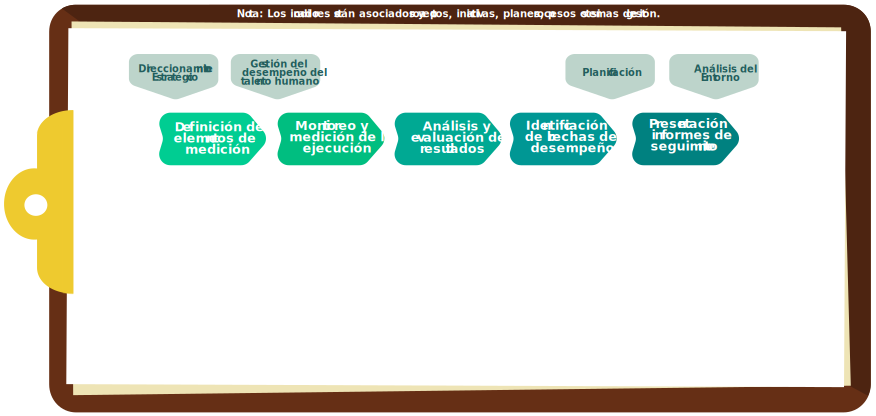
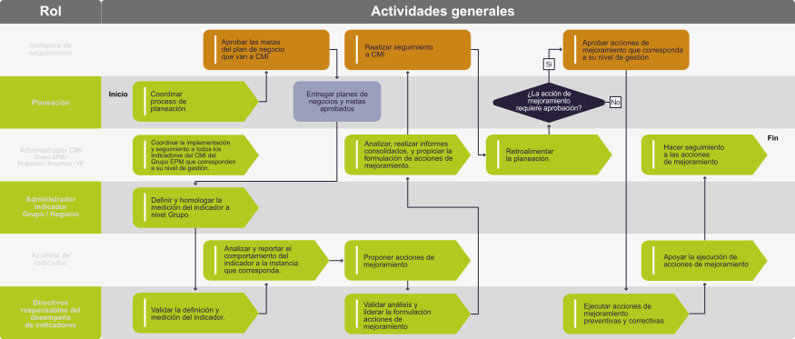

Has llegado a la parte de la finca donde se encuentra el árbol frutal más importante
para nosotros, el cual, como lo explicamos antes, representa la estructura y los
elementos del Cuadro de Mando Integral.
¿Estás listo para conocerlo?
Recomendaciones
Te damos algunas recomendaciones que te ayudarán a desarrollar esta experiencia:


¡Hola!
Para que puedas comprender mejor los conceptos que te queremos enseñar, harás un
recorrido por algunas partes que componen una finca que asociaremos al Grupo EPM. En esta, verás
los elementos que son necesarios para hacer seguimiento a los principales aspectos que hacen
parte de ella. Existe un componente muy importante en esta finca y es el árbol frutal, único en
su especie. Este árbol tiene una estructura que podemos asociar a la del Cuadro de Mando
Integral; también continuarás el recorrido y conocerás las personas que están a cargo del
cuidado de este importante árbol y que, en el Grupo EPM, son las personas que tienen roles
definidos en el Esquema de Gobierno del CMI. Además, conocerás las herramientas que se utilizan
para hacer posible el cuidado del árbol, que para el Cuadro de Mando Integral esta herramienta
es Spider Impact.


Unidad 1. Estructura y Elementos del CMI

El Cuadro de Mando Integral – CMI en el Grupo EPM
Es la herramienta de gestión planteada por los autores Robert Kaplan y David Norton como un sistema de administración, que va más allá de la perspectiva financiera y que permite tener una mirada global del desempeño de los negocios y empresas.
El Cuadro de Mando Integral – CMI en el Grupo EPM
Se compone de perspectivas y objetivos que describen el direccionamiento estratégico de la compañía.
El Cuadro de Mando Integral – CMI en el Grupo EPM

El Grupo EPM adoptó este modelo para describir su direccionamiento estratégico y definir los indicadores y las metas que son objeto de seguimiento a nivel de Grupo, negocio y empresa, para medir el cumplimiento de su estrategia.
El Mapa Estratégico se compone de perspectivas y objetivos, cuya relación causa efecto, nos muestran que a partir de las acciones conseguimos los resultados esperados.
El Cuadro de Mando Integral en el Grupo EPM, puede compararse con la estructura de un árbol que crece en una parte muy especial de la finca; los frutos que da son los resultados de la perspectiva Generación de Valor, los cuales se materializan por tener unas buenas ramas, que en el caso de CMI es la perspectiva de Clientes y Mercados.
Estas ramas son irrigadas por un tronco robusto que en el CMI es la perspectiva de Operaciones; el árbol necesita unas raíces para que crezca de manera sólida y estable; esto se representa en la perspectiva de Aprendizaje y Desarrollo.
Cada Objetivo estratégico puede tener uno o más indicadores asociados, por medio de los cuales se hace seguimiento al cumplimiento del Objetivo.
A continuación se indican algunos ejemplos de los indicadores que se miden en las empresas del Grupo EPM y que se implementan en la herramienta de gestión de indicadores “Spider Impact”.


Unidad 2. Proceso y Esquema de Gobierno de CMI
Ya conociste el árbol frutal que cultivamos en la finca y ahora has llegado a la casa, aquí se encuentran definidas las actividades que se deben desarrollar para su cuidado. De forma similar el proceso de seguimiento y mejora a la gestión permite describir los pasos para administrar el CMI del Grupo EPM.

Comprende la definición de estándares y lineamientos para la inclusión de los elementos que componen una medición o métrica (Unidades de medida, tiempos, datos, variables, etc.), que la planeación indica, los cuales son necesarios para realizar el seguimiento.
Comprende la observación y medición sistemática de los Indicadores objeto de seguimiento, para obtener información de resultados y señales de su desempeño en el periodo evaluado.
Contempla la comparación de los resultados de la ejecución contra lo planeado, para determinar hasta qué punto un indicador, alcanza las metas establecidas, identificando causas de las desviaciones y el impacto
Comprende la identificación del asunto/elemento a mejorar o una buena práctica, que faciliten la toma de decisiones para el cumplimiento de la estrategia a partir del desempeño de los indicadores.
Preparar la información consolidada que permita la toma de decisiones en la respectiva instancia, y promover la aprobación, verificación, y discusión sobre los indicadores.
Roles del Esquema de Gobierno

El CMI cuenta con un Esquema de Gobierno en el que los roles tienen responsabilidades definidas y con ellas se garantiza el buen funcionamiento y la calidad de la información del proceso. Anteriormente identificamos las responsabilidades de los diferentes roles que conviven en la finca y cómo se relacionan con los roles en el CMI, ahora vamos a profundizar en sus responsabilidades.
¡Conócelas a continuación!
Conoce las funciones de cada uno de ellos. Pasa a la siguiente página.

Pase el mouse por la imagen para ampliar la zona


Comprende la identificación del asunto/elemento a mejorar o una buena práctica, que faciliten la toma de decisiones para el cumplimiento de la estrategia a partir del desempeño de los indicadores.
En el seguimiento de indicadores del CMI y según su alcance en la gestión, estas instancias son responsables:
-
Aprobar las metas de los indicadores
-
Hacer seguimiento al comportamiento de los indicadores y dar lineamientos, a partir de los resultados, para los demás niveles de la organización
-
Aprobar las posibles acciones de mejoramiento para el cumplimiento de objetivos, metas e iniciativas de la organización
-
La Junta Directiva es responsable de evaluar la gestión del Grupo EPM a través del monitoreo del desempeño de los objetivos, indicadores según las metas e iniciativas aprobadas en el Cuadro de Mando Integral Corporativo

¿Recuerdas a los encargados de la finca? sus labores son muy parecidas a las que tienen las dependencias con funciones de planeación Estratégica y Corporativa, planeación de negocio y planeación en las vicepresidencias de soporte y en las empresas nacionales e internacionales.
En el seguimiento de indicadores del CMI y según su alcance en la gestión, estas instancias son responsables de:
-
Coordinar la implantación y ejecución de la planeación integrada en el nivel corporativo, competitivo y de soporte.
-
Garantizar alineación estratégica de las definiciones corporativas, para establecer los lineamientos competitivos y de soporte
-
Proponer los indicadores, metas e iniciativas del CMI en los niveles estratégico y táctico, alineados con los planes de negocio, empresa, Grupo

El Administrador de la finca coordina y facilita el desarrollo de los procesos, lo mismo ocurre con el Administrador de CMI. Este rol se despliega en Dependencias Administradoras de CMI Grupo, CMI Empresas, CMI Negocio y CMI Vicepresidencias. Son quienes coordinan y facilitan el desarrollo del seguimiento a los indicadores del CMI, en los correspondientes alcances:
| Dependencia | Alcance |
|---|---|
| Dependencia con funciones de desempeño Corporativo y Empresarial | CMI Grupo EPM y CMI EPM |
| Dependencias con funciones de desempeño de negocio y en las vicepresidencias de soporte | CMI Vicepresidencia y CMI Negocio |
| Dependencias con funciones de desempeño en empresa | CMI Empresas |
En el seguimiento de indicadores del CMI y según su alcance en la gestión, estas dependencias son responsables de:
-
Verificar la calidad, consistencia y oportunidad de la información de seguimiento del CMI de su respectivo nivel (cálculos de indicadores, comentarios de desempeño, acciones de mejoramiento).
-
Analizar los resultados de los objetivos e indicadores en su nivel de gestión a partir del seguimiento a los indicadores.
-
Presentar informes periódicos de avance al CMI y recomendaciones, en las instancias de seguimiento y a las dependencias administradoras de CMI del nivel superior de seguimiento.
-
Apoyar metodológicamente según el alcance, a las dependencias que le reportan información, en cuanto a: alineación de indicadores, formulación, fichas de indicador, metas, acciones de mejora y el proceso de reporte.
-
Apoyar la gestión necesaria en el aplicativo Spider Impact.

Las labores de los Administradores de Indicador, también son asemejables a lo que hacen los agrónomos en nuestra finca. Se trata de expertos del tema objeto de seguimiento, que cuentan con la información y conocimiento necesarios para realizar reportes y análisis del indicador, son responsables en el CMI de:
-
Emitir la documentación del indicador (ficha de indicador y documentos complementarios) con alcance de Grupo o Negocio
-
Realizar contactos y reuniones con analistas de indicador, para homologar y estandarizar la medición del indicador.
-
Reportar en el sistema de información, la ejecución y las metas aprobadas; además los comentarios que expliquen su comportamiento a nivel de Grupo, negocio o empresa
-
Coordinar y orientar la definición de la meta para todas las filiales del Grupo donde se realice la medición y validarla con el Directivo Responsable
-
Velar por la completitud y calidad de los datos y comentarios reportados por analistas del indicador que administra
-
Atender las solicitudes de las diferentes instancias de seguimiento
¿Recuerdas los agrónomos de la finca del Grupo EPM? Las labores de estas personas, se asemeja a las de los Analistas de Indicador del CMI, pues son las personas responsables de proveer la información asociada para el cálculo del indicador. Son expertos del tema objeto de seguimiento, que cuentan con la información y el conocimiento necesarios para realizar reportes y análisis del indicador.
-
Actualizar y reportar las variables del indicador bajo su responsabilidad
-
Acoger las directrices establecidas desde el nivel de Grupo
-
Reportar y analizar oportunamente los comentarios que expliquen el comportamiento del indicador
-
Analizar la información asociada al desempeño del indicador con visión sistémica y recomendar acciones de mejora a los Directivos Responsables por el resultado del indicador, que se encuentren alineadas con los propósitos comunes del Grupo Empresarial, negocio o vicepresidencia
-
Realizar o aportar a la documentación del indicador (ficha de indicador y documentos complementarios).

¡No olvides a los supervisores de cultivo de la finca! Las labores de estos supervisores, son semejantes a las labores que desempeña el Directivo Responsable del Desempeño. Estas personas son las que tienen un rol de líder en la estructura administrativa, son tomadores de decisión en el proceso del cual se obtiene el indicador que se mide.
En el proceso de seguimiento, se realizan actividades como:
-
Validar los indicadores que se van a implementar
-
Validar la meta del indicador bajo su responsabilidad
-
Verificar continuamente el desempeño de los indicadores y metas, y definir las acciones de mejoramiento necesarias para su cumplimiento
*Para mayor detalle consultar el documento: “ Esquema de gobierno CMI Grupo EPM” aqui.

Unidad 3. Roles del Spider Impact
Acabas de llegar al lugar donde se guardan las herramientas que le permiten a cada uno de los roles de la finca desarrollar su trabajo de forma óptima.
El aplicativo Spider Impact es la herramienta de trabajo para los roles de Esquema de Gobierno que hacen parte del CMI, elige el rol con el que te identificas y descubre cómo hacer uso de esta herramienta.